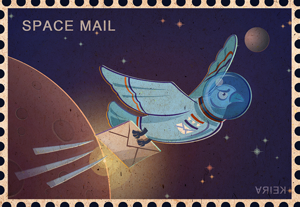

Пожалуйста, обратите внимание, что этот список субъективен, хотя я и стараюсь быть объективным. Ниже приведены некоторые общие сведения:
Варианты:
При рассмотрении позиции я буду учитывать только базовый вариант. Да, у многих кораблей есть варианты, которые делают их значительно лучше (или хуже), но варианты невероятно сложно получить даже тем игрокам, у которых есть соглашение о стратегическом партнёрстве в рамках программы финансирования Dawn. Я буду учитывать только те варианты, с которыми игроки начинают игру (для FG300, AC721 и KCCPV2.0).
Энергетическое оружие:
Энергетическое оружие масштабируется невероятно хорошо, поскольку сопротивление энергии зависит от процента. Любой корабль, оснащённый энергетическим оружием, почти наверняка будет относиться к уровню А.
Физическое оружие против физической брони:
Если говорить о физическом оружии, то чем выше «альфа»-урон (урон за выстрел/торпеду/ракету), тем лучше, так как это позволяет оружию лучше пробивать физическую броню в процентном соотношении.
Вот некоторые показатели физической защиты, о которых следует помнить:
- 5, базовая броня фрегата
- 20, базовая броня эсминца
- 50, базовая броня крейсера
- 80/110/120, улучшенная броня крейсера / базовая броня авианосца
- 160/180/240, базовая броня линейного крейсера
Ремонт беспилотных летательных аппаратов:
Корабли с ремонтными БПЛА очень ценны, так как они значительно повышают устойчивость вашего флота в полевых условиях для ведения непрерывных боевых действий, таких как блокада баз каперов или пополнение запасов. Любой корабль с ремонтными БПЛА почти наверняка относится к уровню А.
Авианосцы (корабли в целом):
Корабли, на которых размещены самолёты (корветы или истребители любого из трёх классов), во многом зависят от того, какие самолёты у вас есть. Например, вы можете получить «Солнечного кита», но если CV-11003 — ваш единственный корвет, вы не сможете нанести большой урон.
Уровень S:
Вы определенно хотите управлять этими кораблями, это одни из лучших кораблей, которые есть в игре, и наличие их сделает вас сильным игроком.
Значения рейтинга в списке уровней:
Уровень A:
Отличные корабли, которые хорошо проявляют себя в бою и обычно могут сражаться с кораблями любого класса, нанося им большой урон, или с кораблями-стражами.
Уровень B:
Надёжные корабли, которые хорошо справляются со своей задачей, но, к сожалению, имеют некоторые недостатки или ограничения по количеству командных очков, из-за чего не дотягивают до уровня A.
Уровень C:
Корабли, которые в целом посредственны или просто слабы. Несмотря на то, что ими можно вполне успешно управлять, они, как правило, уступают кораблям уровня B.
Уровень D:
Корабли, которые практически бесполезны, сложны в использовании или просто никуда не годны. Да, их можно использовать, но в большинстве случаев их лучше заменить чем-то более высокого уровня.

---------- Рейтинги уровня S ----------
Constantine the Great (Константин Великий):
Благодаря импульсной пушке, безумно высоким альфа-ракетам (базовый урон 800) и статусу боевого корабля это один из лучших кораблей в игре с отличным уроном, который пробивает всё на своём пути. Сосредоточиться на обеих системах вооружения — вполне нормально. Добавьте 5 единиц усиления к флоту, и вы получите флот, способный справиться практически с чем угодно.
Eternal Storm (Вечный Шторм):
Благодаря более мощному энергетическому оружию, чудовищной торпедной системе и ракетной системе для эсминцев и крейсеров это превосходный корабль, который, как и все остальные корабли класса S, может проделать в корпусе любого корабля новую дыру. Сосредоточьтесь на ионных системах. Отлично подходит для усиления флота, чтобы не зависеть от командных очков.
Spear of Uranus (Копье Урана):
Это невероятно прочный корабль даже по меркам BC. Несмотря на отсутствие энергетического оружия, благодаря носовому рельсотрону и другим системам вооружения он может легко справиться с любым кораблём и при этом выдержать сокрушительный удар. Сосредоточьтесь на рельсотроне. Как и в случае с любым другим боевым кораблём, усиление 5 — отличный способ укрепить флот.
Taurus (Телец):
Признаюсь, я предвзят из-за обсуждений с другими игроками, но что отличает этот корабль с энергетическим оружием от других кораблей с энергетическим оружием в A-тире? Что ж, энергетическая система позволяет сократить время перезарядки ещё на 15 % (всего на 45 %), а в сочетании со стратегией «Приоритет огневой мощи» этот корабль будет уничтожать всё, что встретится ему на поле боя, с невероятно низким временем перезарядки. Именно поэтому этот корабль заслуживает места в S-классе, а не в A-классе энергетических кораблей.
---------- Рейтинг уровня A ----------
Callisto (Каллисто):
Обладая мощной торпедной системой и стратегией борьбы с крейсерами, «Каллистро» представляет собой чудовищный корабль поддержки, который быстро расправляется с крейсерами (и любыми другими кораблями). Сосредоточьтесь в основном на торпедной системе, так как она может быть защищена бронёй CAS066.
CAS066:
CAS066s — лучший «стартовый» корабль на сегодняшний день. Это универсальный корабль, который может как выдержать удар, так и нанести его. Улучшайте физическую броню и сосредоточьтесь на системе торпед. Система пушек слишком дорогая для того, что она даёт.
Cellular Defender (Мобильный Защитник):
Вооружённый высокоточными торпедными системами, этот корвет может нанести урон любому противнику.
Chimera (Химера):
Чудовищный передовой танкующий крейсер, похожий на миниатюрное «Копьё Урана», которое также может наносить значительный урон. По сравнению с CAS066, он более устойчив к повреждениям, но имеет несколько более слабые системы вооружения и не обладает базовым энергетическим сопротивлением. Усильте его броню и орудийную систему.
CV3000:
Как уже упоминалось, эффективность авианосцев во многом зависит от имеющихся у вас корветов. Однако из-за высокой стоимости в командных очках он создаётся как корабль поддержки.
Guardian (Хранитель):
Стражи, которые ценятся не за свои боевые качества, а за безупречные вспомогательные возможности, значительно повышают выносливость любого флота, в состав которого они входят, что делает фарм и танкование гораздо более эффективными. Система БПЛА должна быть в приоритете.
Io (Ио):
Ещё один передовой крейсер, но с усиленным энергетическим оружием и возможностью уклонения. Ионная пушка легко пробьёт защиту большинства противников Отдавайте предпочтение ионной пушке, так как способ защиты крейсера зависит от вас: вы можете выбрать между бронёй и системой дополнительного бронирования..
Mare Serenitatis (Море Спокойствия:):
Благодаря скорострельной торпедной системе с высоким альфа-показателем этот фрегат может легко пробить броню любого корабля в игре и нанести ему значительный урон.
Redbeast 7-13 (Красный зверь 7-13:):
Обладая ракетами с высокой альфой, этот корвет может справиться со многими другими кораблями, с которыми ему предстоит столкнуться, а стратегия борьбы с крейсерами повысит его эффективность.
Ruby (Рубин):
Фрегат с высокоальфа-рельсовым орудием — это фрегат, буквально созданный для того, чтобы пробивать новые дыры в крейсерах, линкорах и авианосцах. Выбирайте «Дополнительный заряд» вместо стратегии, так как дополнительный урон слишком ценен при сражении с крупными целями.
Tundra (Тундра):
По той же причине, что и у Хранятеля, у этого эсминца есть ремонтные БПЛА, которые делают ваш флот гораздо более устойчивым. Прежде всего обновите систему БПЛА.
Solar Whale (Солнечный Кит:):
Та же история, что и с CV3000, только больше корветов и меньше истребителей.
Stringray (Стрингрей):
Тяжёлый истребитель, предназначенный для бомбардировки крупных целей, с лёгкостью справится с любым кораблём, но не имеет защиты от зенитных орудий.
Strix A100 (Стрикс А100:):
Средний истребитель, оснащённый энергетическим оружием, быстро расправится с любым кораблём или самолётом, который вам попадётся.
Winged Hussar (Крылатый Гусар):
Благодаря своей высококалиберной пушке и ракетной системе этот эсминец может справиться с любой задачей. Если вам предстоит вступить в бой с большим количеством боевых кораблей, крейсеров или игроков на крейсерах с улучшенной бронёй, вместо этого переведите несколько очков технологий в систему пушек, так как ракеты начинают испытывать трудности при поражении целей с бронёй выше, чем у базового крейсера.
Vitas-B010 (Витас-B010):
Тяжёлый истребитель, оснащённый энергетическим оружием, может с лёгкостью уничтожить любую крупную цель, но не способен вести воздушный бой.
XenoStinger (Ксеностингер):
Фрегат, который выпускает на поле боя беспилотные летательные аппараты для ведения энергетического боя, может легко справиться со всеми кораблями.
---------- Рейтинги уровня B ----------
B192 Newland (B192 Ньюленд):
Средний истребитель с хорошей противовоздушной защитой и скромным противокорабельным вооружением. Он остаётся на уровне B, потому что его противокорабельная артиллерийская система не сможет нанести урон крейсерам или эсминцам с улучшенной бронёй или чем-то подобным..
Bullfrog (Лягушка - бык:):
Тяжёлый боец, способный наносить большой урон и вести осаду. Он остаётся на уровне B из-за того, что у торпедной системы недостаточно высокий альфа-урон, чтобы конкурировать с танками с улучшенной бронёй, средними танками или тяжёлыми танками, но его рейтинг можно считать B+.
Ceres (Церера):
Прочный авианосец, способный нести 2 средних истребителя (и ниже), а также проводить ремонт, что делает его подходящим для перевозки истребителей. Он относится к уровню B, так как сильно зависит от вашего самолёта, но не имеет усиливающих элементов, которые есть у настоящих авианосцев.
CV-11003:
Прочный корвет, способный наносить приличный урон своими пушками. Он относится к уровню B из-за того, что не может нанести урон улучшенным атакам, не говоря уже о защите или броне.
CV-M011:
А ещё это прочный корвет, который вместо пушек использует ракеты. Как и большинство кораблей этого уровня, он с трудом справляется с противниками, у которых броня выше, чем у базового крейсера.
Janbiya Aer410 (Джанбия Aer410):
Средний истребитель, который может наносить отличный урон по воздушным целям и по кораблям с базовой бронёй крейсера.
KCCPV2.0:
Хотя технически он соответствует уровню А, я помещаю его в этот список из-за несколько разочаровывающей производительности в режиме DPM . Поэтому его следует выделить отдельно от крейсеров уровня А. Авиационный вариант несёт на борту 2 больших истребителя, которые могут пригодиться. Если говорить техническим языком, то это уровень B+.
Light Cone (Конус Света):
Обладая довольно слабым для крейсера противокорабельным вооружением, он относится к классу B и отличается от крейсеров класса A. Несмотря на наличие беспилотных летательных аппаратов, из-за какой-то странности они, похоже, не наносят большого урона.
Nebula Chaser (Охотник за туманностями):
Как и все другие корветы этого уровня, он может нанести приличный урон, но будет бесполезен против любого противника с бронёй выше, чем у базового крейсера.
Predator (Хищник):
Авианосец может нести на борту 4 средних истребителя, но не имеет функции ремонта. Его ракеты также наносят приличный урон базовой броне крейсера.
Reliat(Релиат):
Фрегат, который с лёгкостью расправляется с другими фрегатами и может испортить день эсминцу. Торпедная система с низким альфа-показателем делает фрегат неэффективным даже против базовой брони крейсера, хотя он всё равно может найти применение в PvP против фрегатов и эсминцев других игроков.
Sandrake (Сандрейк):
Лёгкий истребитель, специализирующийся на противовоздушной обороне, быстро расправится с вражескими корветами, но больше ничего не умеет. Его ценность во многом зависит от того, какие корветы будут у противника. Судя по всему, на данный момент этот истребитель не может должным образом поражать корветы.
Silent Assassin (Бесшумный Убийца):
Та же история, что и с корветами уровня B: они хорошо справляются со своей задачей, но проигрывают всему, у чего броня толще, чем у базового крейсера.
Spore A404:(Спора A404)
Лёгкий истребитель, который также специализируется на воздушных боях. Многие характеристики у него такие же, как у Sandrake.
ST59:
Как и KCCPV2.0, на этот раз он выделен из всего А-уровня. Причина, по которой он относится к В-уровню, заключается в том, что его урон не соответствует количеству командных очков, то есть он наносит недостаточно урона за свою стоимость. Даже в таком случае это всё равно мощный BC, который хорошо подходит для армирования, и, как и у KCCPV2.0, его рейтинг можно точнее описать как B+.
Vitas A021 (Витас А021):
Средний истребитель, который может нанести более серьёзный урон кораблям с бронёй не выше, чем у базового крейсера, в обмен на более слабую противовоздушную оборону.
Void Effin (Эффект Пустоты):
Те же песни и пляски, что и у всех остальных корветов B-класса. Его системы вооружения наносят более высокий альфа-урон (хотя и недостаточный, чтобы противостоять броне, превосходящей базовую броню крейсера), поэтому его рейтинг составляет B+.
---------- Рейтинги уровня C ----------
AC721:
Сам мемный эсминец с трудом пробивает броню базового крейсера. Вариант стандартный подходит для хранения вспомогательных кораблей X8 и X10, а также для транспортных квестов. По какой-то непонятной причине у него 5 единиц брони вместо обычных для эсминцев 20. Вариант Dual гораздо лучше подходит для перевозки корветов, но это не спасает его от общего снижения до уровня C. Если вдаваться в технические подробности, то Dual относится к уровню B.
Balancer Anderson SC020:
В таинственную эпоху CBT2 этот истребитель действительно вёл радиоэлектронную борьбу и снижал урон, наносимый вражеским кораблям, таким как линкоры. Но, увы, теперь его уклонение составляет всего 50 %. Этот лёгкий истребитель — довольно слабый боец, который может вести только зенитный бой или атаковать фрегаты, но уступает истребителям уровня B.
Eris I:
Несмотря на то, что этот эсминец больше ориентирован на бой и обладает базовым уклонением, базовый альфа-урон в 40 единиц значительно затрудняет его использование против всего, что имеет броню хотя бы на уровне базового крейсера.
FG300:
Его пушки с трудом пробивают даже базовую броню эсминцев, поэтому ни один из этих кораблей не нанесёт существенного урона. Бронированный вариант служит отличным «живым щитом» для ваших фрегатов и эсминцев, имея всего 3 очка командования, особенно с учётом улучшений HP. Таким образом, его можно отнести к уровню B. Бронированный вариант не предназначен для ведения боевых действий, но является хорошим торговым и разведывательным кораблём и может считаться кораблём уровня B.
Mare Tranquilitatis (Море Спокойствия):
Этот фрегат с 7-секундным альфа-уроном в 25 единиц и ракетами с низким DPM может наносить урон крейсерам, но его урон крайне низок (его боевые характеристики были лучше в CBT2, до того как его ослабили). Тем не менее его можно отнести к уровню C+.
SC002:
Лёгкий истребитель с той же историей, что и у Balancer Anderson SC020. Раньше он мог вести радиоэлектронную борьбу, но теперь это посредственный истребитель для противовоздушной обороны и фрегатов с показателем уклонения 50 %.
---------- Рейтинги уровня D ----------
Carilion (Карилион):
Что касается разведки, связи и рекогносцировки, то у всех игроков уже есть FG300 разведывательный для этих целей, и он стоит меньше командных очков. В боевом плане он совершенно невысок (как вы уже догадались, он не может поцарапать даже базовые крейсеры), хотя его боеспособность выше, чем у FG300, что, возможно, означает, что он может выполнять нишевые задачи, например уничтожать вспомогательные корабли. Тем не менее это был бы посредственный корабль.
Mare Nubium (Море Облаков):
Не то чтобы плохой, но действительно нишевый корабль. У него есть осадные БПЛА, которые наносят большой урон за свои командные очки. Проблема заключается в его запуске: Для городов объединение во флот было бы пагубным, поскольку большая часть боевых действий ведется против охраняющих флотов. В PvP его можно использовать в редких случаях. Он будет эффективен против баз игроков, но у него те же проблемы, что и у городов. Для таких сооружений, как аванпост, его можно использовать в составе флота для сноса, но с этой задачей справится и множество других кораблей. Это просто эффективнее, так как вы можете точнее подобрать состав флота, а также действовать быстрее, поскольку можете использовать только фрегаты. Новое: у зданий тоже есть показатель брони, который влияет на урон от осады. Таким образом, урон от осады, который может нанести Море Облаков, на самом деле значительно снижается.
NOMA M470:
Та же история, что и с Море Облаков.
